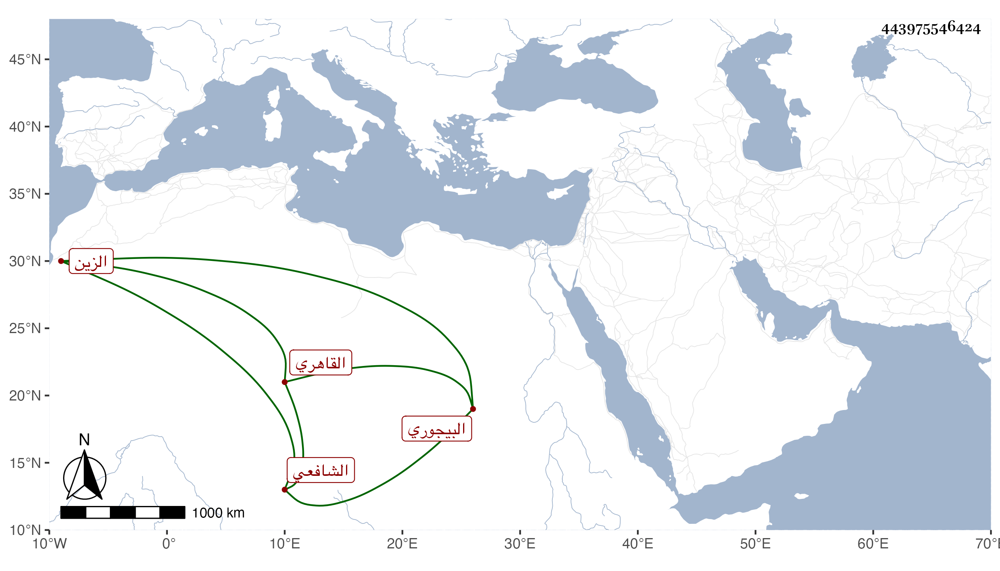

0902Sakhawi.DawLamic.ITO20230111-ara1.EIS1600.443975546424
Biography ID: 443975546424
612
مرزوق بن أحمد بن على الزين البيجوري ثم القاهري الشافعي أخو البرهان ابرهيم الماضي . ولد مزاحم القرن ونشأ فحفظ القرآن وقرأه بتمامه على أخيه ولازمه في الدروس وغيرها ، وسمع من لفظ شيخنا على ابن عمه الشمس محمد بن حسن بن على البيجوري جزءاً للدمياطى وكذا سمع على الفوى والشمس ابن المصرى والطبقة ، وحج وتنزل في صوفية البرقوقية وتكسب في البز بسوق طيلان مع السكون ولين الجانب والاكثار من التلاوة والمحافظة على الجماعة و تعاهده للمنهاج بحيث دام حفظه له وقد أجاز في بعض الاستدعاآت . مات فجأة في شوال سنة سبع وسبعين ودفن بالمرجوشية رحمه الله وإيانا .
